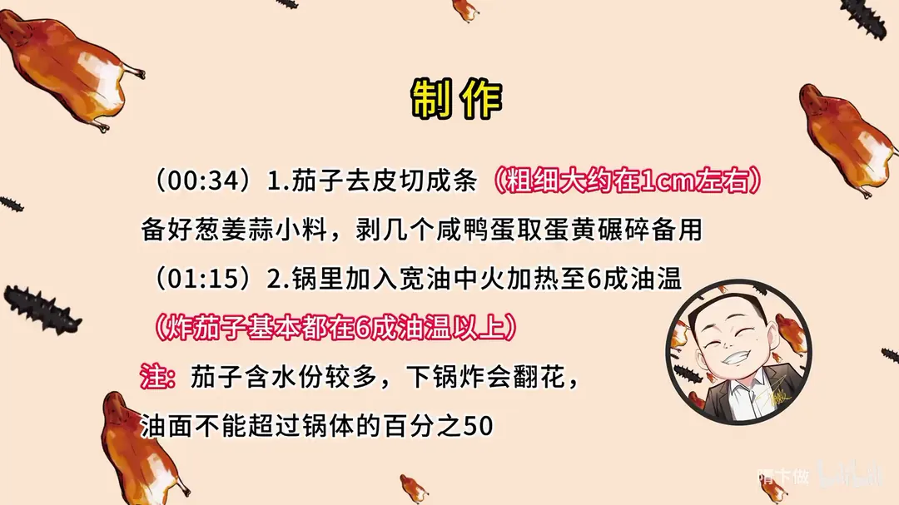
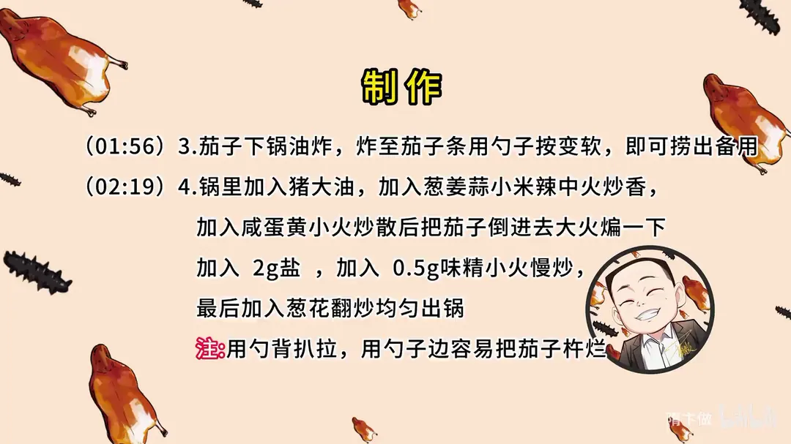

咸蛋黄茄子
隋卞一做。茄子去皮切成 1cm 粗条，六成以上油温宽油炸至按得软，再用猪大油把葱姜蒜、小米辣炒香，咸蛋黄炒散裹匀，只用盐和味精调味。
原视频：https://www.bilibili.com/video/BV1Bh411P7x3
食材
茄子、咸鸭蛋、葱 等 9 样
| 类别 | 用料 | 用量 |
|---|---|---|
| 主料 | 茄子 | 适量 |
| 主料 | 咸鸭蛋 | 适量 |
| 小料 | 葱 | 适量 |
| 小料 | 姜 | 适量 |
| 小料 | 蒜 | 适量 |
| 小料 | 小米辣 | 适量 |
| 炒制 | 猪大油 | 适量 |
| 调味 | 盐 | 2g |
| 调味 | 味精 | 0.5g |
步骤
- 切条备料：茄子去皮切成条，粗细大约在 1cm 左右；备好葱姜蒜小料，剥几个咸鸭蛋取蛋黄碾碎备用。
- 热油：锅里加入宽油，中火加热至 6 成油温。炸茄子基本都在 6 成油温以上；茄子含水份较多，下锅炸会翻花，油面不能超过锅体的百分之五十。
- 炸茄子：茄子下锅油炸，炸至茄子条用勺子按变软，即可捞出备用。
- 炒制：锅里加入猪大油，加入葱姜蒜、小米辣中火炒香，加入咸蛋黄小火炒散后把茄子倒进去大火煸一下，加入 2g 盐、0.5g 味精小火慢炒，最后加入葱花翻炒均匀出锅。注意用勺背扒拉，用勺子边容易把茄子杵烂。
讲解要点
难度：★★☆☆☆（做法简单，难点在油温控制和宽油油炸的安全）
为什么这么做
- 一定要高油温炸：茄子特别吸油，六成以上的油温会让表面迅速结痂，油就进不去了；油温低了茄子会像海绵一样把油全喝进去。
- 判断六成油温：锅里没有多余的水声、油面平静、表面冒起一点点小青烟，就可以了。
- 油面不超过锅体的 50%：茄子含水多，下锅会翻花，油量太满容易溢出来。
- 切 1cm 粗的条：太厚外面炸透了里面还没软；炸到用勺子按着软了就能出锅。
- 用猪大油炒小料：猪大油的动物香和咸蛋黄、茄子最搭，素油香气撑不起来。
- 咸蛋黄要小火炒散：蛋黄本身容易糊，小火慢慢炒散，再倒茄子转大火把味吸进去。
- 最后只用盐和味精小火慢炒：调料只做底味，小火慢炒让咸蛋黄的味渗进茄子，不被调料抢掉。
容易翻车
- 茄子别切太厚，太厚一是炸不透，二是下锅容易炸油。
- 煎炒时用勺背扒拉，用勺边容易把茄子杵烂。
- 咸蛋黄小火炒，火大一下就糊、发苦。
- 炸完茄子的油很干净，可以继续用，不用心疼。
热评补充
- 有长沙吃过的朋友分享另一种做法：咸蛋黄磨得比视频里更细；茄子条先用盐轻轻揉一下，去水的同时入个底味，拍薄粉后中火炸到表面起脆；另起锅用荤油炒香小料、下蛋黄泥快速搅动，蛋黄会膨胀成蓬松泡沫状，再下茄子翻匀出锅，表面金黄、外脆内软。
原片尾卡


原片文案
AI 字幕校准稿
完蛋了啊。去了一趟湖南，给我留下印象最深的菜，除了那个皮蛋肉丸，还有一个就是这个菜。之前真没吃过咸蛋黄的香味，炒出来之后被茄子完完整整地吸收了，最后是咸蛋黄那种沙沙的咸香，真的香。虽然那期播放量不咋样，但这道菜对我的惊艳程度不比皮蛋肉丸少。回北京我就琢磨着一定要给你们搞出来，鲁哥饭店的咸蛋黄茄子，开整。
咸蛋黄茄子，无论是长茄子还是圆茄子并不重要。这茄子的屁股其实蒸着挺好吃的，不要丢；茄子皮也可以一块蒸着吃，都是花青素。把它切成条，粗细大约在一厘米左右，太厚了一会儿会炸。
葱姜蒜小料备上，我剥几个咸鸭蛋，给它碾碎，真材实料。
上火开炒。里边加点油，把油烧热，炸茄子基本上都在六成以上油温。茄子很容易吸油，所以一定要高油温炸，油温高的时候表面会迅速结痂，油就进不去了。什么情况才叫六成热？里边没有多余的水声了、油面平静了、上面要冒小青烟，有一点点烟就差不多了。因为我们家里的火比较软，油温加茄子的时候肯定唰就下去了，所以温度高一点没有问题，最低是六成。
再炸茄子时一定要注意，茄子含水分特别多，下锅之后肯定会翻花，所以油面不能超过锅体的百分之五十。拿勺子一按，茄子条软了就可以出锅。
炸完茄子把油倒出去，少来点猪大油，下蒜、搁点小米辣，小米辣会增加一点微辣的口感。炒香之后加入咸蛋黄，小火炒就行，不用大火炒散。把茄子倒进去之后就恢复大火，在锅里扒拉扒拉，用勺背，勺边容易把茄子都杵烂了。煸一下，让茄子把味吸足，一点盐、来几粒味精，小火慢炒，把它炒入味，再来点葱花翻炒均匀，出锅。
我这比例稍微多了一点小辣椒，回一点微微的辣的感觉。这个菜口味调得特别清，还能吃到茄子那种青椒沫子，再加上咸蛋黄浓香的搭配，真挺好吃。咸蛋黄提供那种沙沙的口感，再加上茄子的软糯，两种口感差别也特别大。原版里面好像没有那个小米辣，咱们加了之后微微有点辣，一丝丝辣味，辣度很舒服。
这菜我感觉好简单，有手就会，但是咸蛋黄一定要用现剥的，绝对味道更好，袋装那个口感稍微差一点。大家不太做饭的朋友也能通过这个菜练一练油炸。不要害怕浪费油，炸完茄子那个油是很干净的，还能继续用，放点花椒也可以。